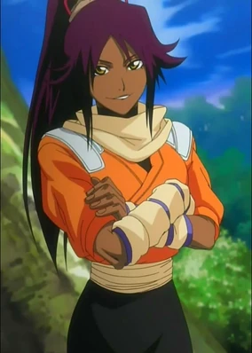
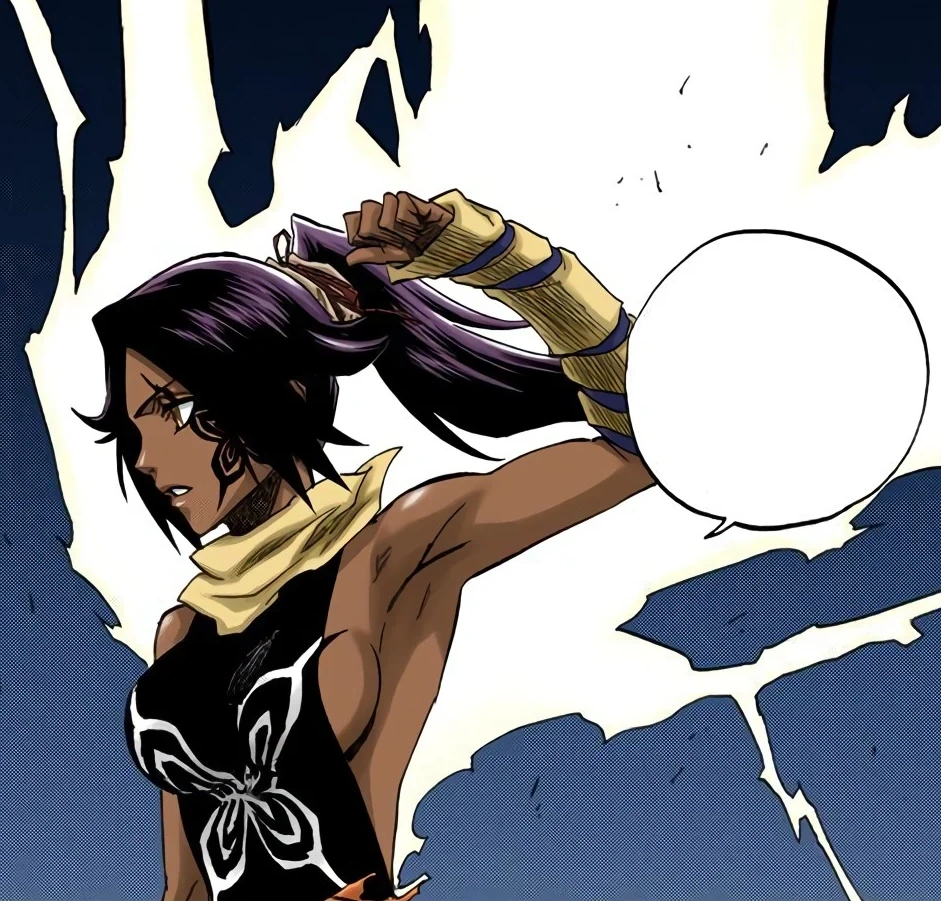

YORUICHI
Yoruichi Shihōin nasceu como a princesa dos Tenshiheisōban (Casa das Engrenagens Divinas), o Clã Shihōin, uma das quatro famílias nobres. Yoruichi cresceu na Mansão Shihōin no Seireitei da Soul Society com seu amigo de infância Kisuke Urahara. Durante este tempo, eles jogaram juntos diariamente sob o espaço de treinamento da montanha de Sōkyoku, que Urahara construiu quando eram crianças. Mais tarde, Yoruichi tornou-se o Comandante do Corpo da Milícia Executiva do Onmitsukidō enquanto servia como a 22ª cabeça geracional do Clã Shihōin, tornando-se a primeira mulher a ocupar a posição. Yoruichi é uma das personagens mais recorrentes do roteiro de toda serie, recebendo mais atenção que o normal, aparecendo sempre junto á Urahara e trabalhando com ele nas sombras.
SHUNKOU
A técnica suprema de Yoruichi que mistura Kidou e Hakuda cobrindo o corpo com Kidou todo o corpo do usuário ganha um grande aumento de força e velocidade, e também pode-se disparar raios do corpo
AMIGOS QUE FAZEMOS PELO CAMINHO


GOTEI 13